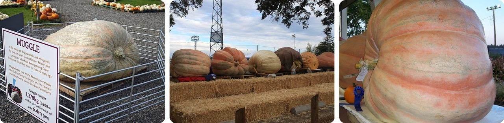
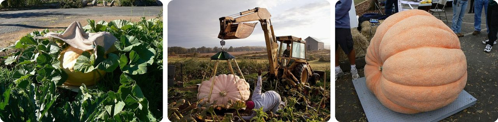
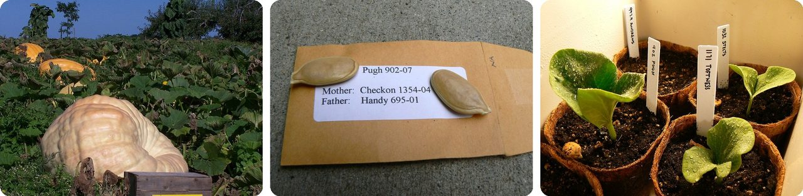
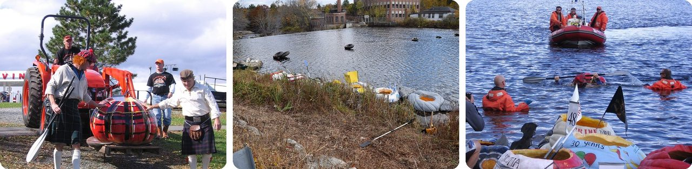
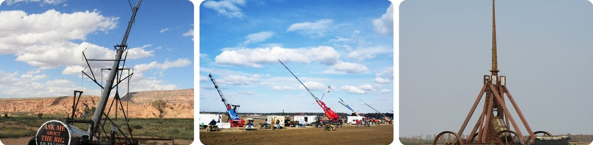
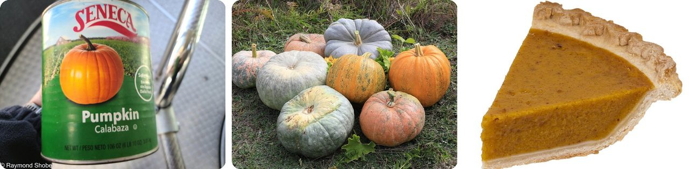
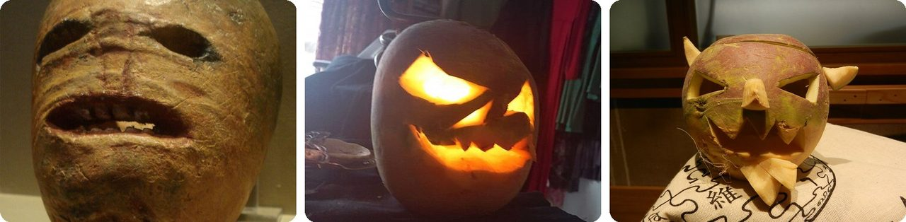
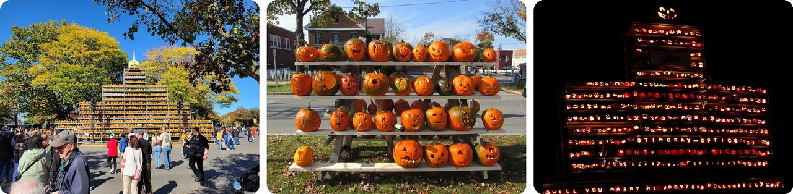
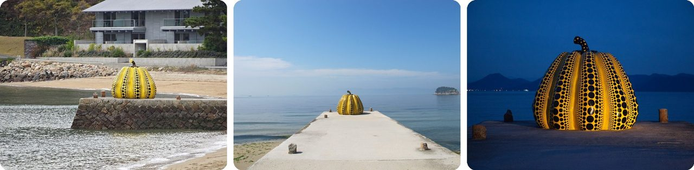
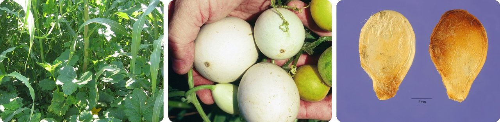

🌍 Top 10 Giant Pumpkin Oddities
Oct 19, 2026
1. 🇺🇸 The heaviest pumpkin ever weighs as much as a small car

On October 10, 2026, American grower Ron Wallace set a new world record with a pumpkin weighing 3,156 pounds (1,432 kg). That's heavier than plenty of small cars.And here's the twist. The record he beat was only one week old. On October 3, Britain's Ian Paton had set it at 2,857 pounds with a pumpkin named Bagheera, topping "Muggle," the 2,819-pound giant he grew with his twin brother Stuart in 2025.
Records keep falling because about 10,000 growers try for a giant every year. Georgia Tech scientist David Hu calculated that a perfect pumpkin could reach 20,000 pounds before its own weight broke it, so there's plenty of room left.
Basically, the world's biggest pumpkin is a car-sized vegetable that gets passed around like a trophy.
2. 🎃 A giant pumpkin can gain 50 pounds in one day

At full speed, a giant pumpkin can add up to 50 pounds (23 kg) a day. That's like gaining the weight of a six-year-old kid every single day.Three things make it possible. Its cells grow bigger than a normal pumpkin's, they're up to 94% water, and the plant is missing the genes that normally tell a fruit to stop growing.
That creates a new problem. The pumpkin gets so heavy it slumps into a flat "pancake" and can crack under its own weight. A cracked pumpkin is disqualified, so growers move the finished ones very carefully, often hanging them from a sling.
Think of it as a water balloon that nobody ever turns the tap off on.
3. 🇨🇦 A sixth-grade dropout bred the world's giant pumpkins

Howard Dill left school after grade 6 and taught himself plant genetics on his farm near Windsor, Nova Scotia. In 1979 one of his hybrids won a top prize at 439 pounds, and he patented its seeds as the Atlantic Giant.Many of the record pumpkins since then come from Dill's Atlantic Giant. Growers now track each seed's family tree the way horse breeders do, labeling every seed packet with its "mother" and "father" pumpkins.
The best seeds sell for up to $850 each, about the price of a new phone. Dill became known as "The Pumpkin King."
In other words, a lot of the monster pumpkins at the fair share one famous Canadian ancestor.
4. 🇨🇦 People race across lakes sitting inside giant pumpkins

In 1999, Howard Dill's son Danny started the Windsor Pumpkin Regatta in Nova Scotia. Racers hollow out a giant pumpkin, climb in, and paddle half a mile (800 m) across Lake Pesaquid.The pumpkin is the only thing keeping you afloat, and some tip over, so rescue boats stand by. A local named Leo Swinimer won six of the first ten races, one of them at age 73. By 2008 the race drew 10,000 spectators.
The idea spread to Oregon, Maine, Wisconsin and Germany. Windsor's own race wasn't so lucky. The last one was in 2019; COVID cancelled the next two, and in 2022 the lake's tide gates were changed to help fish, the water dropped, and the race was called off indefinitely.
It's a boat race where the boat is also a vegetable.
5. 🇺🇸 An air cannon fired a pumpkin more than a mile

In punkin chunkin, teams build slingshots, catapults, trebuchets and air cannons just to fling pumpkins as far as they can. Many contests happen in early November, which is a handy way to get rid of leftover Halloween pumpkins.The pumpkin has to land in one piece. If it bursts in the air, it's called "pie" (short for "pumpkin pie in the sky") and the shot doesn't count.
The record belongs to an air cannon called Big 10 Inch, which shot a pumpkin 5,545 feet (1,690 m) in Moab, Utah, in 2010. That's more than a mile, about 15 football fields. Moab sits high up, where the air is thinner, so there was less air slowing the pumpkin down.
Think of it as artillery, but the ammo is Halloween decorations.
6. 🇺🇸 Most canned pumpkin doesn't come from orange pumpkins

Open a can of pumpkin in the U.S. and you're probably eating a Dickinson pumpkin: a tan, blocky squash that looks more like a butternut squash than a jack-o'-lantern. It's prized because its flesh is dry and fine, which is perfect for baking.Most of it comes from one Libby's plant in Morton, Illinois, which makes somewhere between 80% and 95% of the canned pumpkin out there. The company says that's enough for 90 million pies a year, and the governor named Morton the "Pumpkin Capital of the World" in 1978.
Because one town supplies so much, one bad season is felt everywhere. Heavy rain delayed the 2009 harvest and threatened Thanksgiving pies, and a poor 2015 harvest led to a Christmas canned-pumpkin shortage.
Basically, your pumpkin pie is squash wearing a pumpkin costume.
7. 🇮🇪 The first jack-o'-lanterns were carved from turnips

Before pumpkins, people in Ireland, Scotland, Wales and England carved scary faces into turnips and mangel-wurzels (big beets grown to feed cattle) for Halloween. Some were set in windows to keep harmful spirits out of the house.Irish legend explains the name with Stingy Jack, a drunk who tricked even the Devil and was doomed to wander the earth with only a hollow turnip to light his way.
When Irish and Scottish immigrants brought the custom to North America, the local pumpkin took over. The word "jack-o'-lantern" first shows up meaning a carved vegetable in 1837.
The pumpkin was the upgrade; the turnip was the original.
8. 🇺🇸 Keene, New Hampshire, once lit 30,581 jack-o'-lanterns at once

Exactly 13 years ago today, on October 19, 2013, the town of Keene set the world record for the most lit jack-o'-lanterns in one place: 30,581.Businesses, schools and families carved and donated them, and volunteers packed them onto huge shelves and towers all over downtown. Keene had held the record before, lost it to Boston in 2006 with 30,128, and then won it back.
It was the town's last big win. After student riots near the 2014 festival, the city refused to approve another one, and the big event moved to Laconia.
Picture a whole town turned into one giant night-light.
9. 🇯🇵 A famous polka-dot pumpkin was wrecked by a typhoon

Artist Yayoi Kusama has drawn pumpkins since elementary school. Her family ran a plant nursery and seed farm, and she fell for pumpkins on a childhood trip to a seed field with her grandfather.In 1994 her yellow, black-dotted Pumpkin went up at the end of a pier on Naoshima, an island in Japan full of outdoor art. It's 2.5 m (8 ft) wide, about as wide as a parking space, and it became an icon as Kusama grew famous.
Then, in 2021, a typhoon destroyed it. A new one was put back on the pier in 2022.
In other words, even a fiberglass pumpkin sometimes has to be regrown.
10. 🇲🇽 Pumpkins are one of the oldest crops on Earth

Bits of pumpkin found in Mexico date to between 7000 and 5500 BC, roughly 9,000 years ago. That puts pumpkin farming thousands of years ahead of Egypt's pyramids.Wild relatives still grow in northeastern Mexico and the southern U.S. Many Native American farmers planted squash together with corn and beans, a team known as the Three Sisters.
And one last surprise: botanists count a pumpkin as a berry, a thick-skinned kind called a pepo.
So your jack-o'-lantern is a berry with a 9,000-year family tree.
Fun fact
The modern giant pumpkin craze traces back to an unlikely gardener: Henry David Thoreau, the author of Walden. In 1857 he grew a 123-pound pumpkin and wrote about it in Wild Fruits, a book he never finished. Writers, it turns out, have had plenty of odd side projects. Next time: the surprising hobbies of famous writers.
Photo credits (Wikimedia Commons)
- #1: Muggle giant pumpkin.jpg by Mgiganteus1, CC BY-SA 4.0
- #1: Giant pumpkins linedup.jpg by Nick Ares, CC BY-SA 2.0
- #1: Giant Pumpkin - 1138 Pounds! (flickr) by julian meade, CC BY 2.0
- #2: CurtisMike's Giant Pumpkin.jpg by Nick Ares, CC BY-SA 2.0
- #2: Pointing Up.jpg by David.politzer, CC BY-SA 4.0
- #2: Giant Pumpkin Festival 10.20.07 130.jpg by Nick Ares, CC BY-SA 2.0
- #3: Howard Dill's Pumpkin Patch.jpg by SheDreamsInRed, CC BY-SA 3.0
- #3: Giant Pumpkin Seeds (flickr) by aresauburn™, CC BY-SA 2.0
- #3: Giant Pumpkin Seedlings.jpg by Nick Ares, CC BY-SA 2.0
- #4: WindsorRegatta 24 Tartan Pumpkin.jpg by Verne Equinox, CC BY 3.0
- #4: Pumpkin Boats (93685761).jpeg by Matthew Bellemare, CC BY-SA 3.0
- #4: WindsorRegatta 36To the rescue.jpg by Verne Equinox, CC BY 3.0
- #5: Big 10 Inch - World Record Moab Shot.JPG by Shadow6934, CC BY-SA 3.0
- #5: Punkin' Chunkin' 2010 - Air Cannons (flickr) by ChrisHConnelly, CC BY 2.0
- #5: Punkin-Chunkin-2008-Trebuchet.JPG by GB fan, CC BY-SA 3.0
- #6: Canned pumpkin. (flickr) by bossco, CC BY-SA 2.0
- #6: Cucurbita 2011 G1.jpg by George Chernilevsky, Public domain
- #6: Pumpkin-Pie-Slice.jpg by Evan-Amos, CC BY-SA 3.0
- #7: Traditional Irish halloween Jack-o'-lantern.jpg by rannṗáirtí anaiṫnid (coṁrá), CC BY-SA 3.0
- #7: Turnip Jack-o'-lantern 2019 01.jpg by Smirkybec, CC BY-SA 4.0
- #7: Samhuinn carved turnip at University of Edinburgh editathon - 31st October 2016 01.jpg by Stinglehammer, CC BY-SA 4.0
- #8: Pumpkin tower at the Keene Pumpkin Festival, Keene NH.jpg by John Phelan, CC BY 4.0
- #8: Rack of pumpkins, Keene NH.jpg by John Phelan, CC BY-SA 3.0
- #8: Pumpkin Tower.jpg by jmwests, CC BY 2.0
- #9: Yellow Pumpkin Monument.jpg by ブルーノ・プラス, CC BY 4.0
- #9: Yayoi Kusama's Pumpkin - Naoshima (flickr) by Kaeru, CC BY 2.0
- #9: 'Pumpkin” by Yayoi Kusama in Naoshima (flickr) by jmhullot, CC BY 2.0
- #10: Association culturale maïs-Haricot-Courge dans la région du Mixtepec au Mexique.JPG by photo prise par Isabelle Fragniere, CC BY-SA 3.0
- #10: Cucurbita pepo subsp. texana - ripe white fruit.jpg by John D. Byrd, Mississippi State University, Bugwood.org, CC BY-SA 3.0
- #10: Cucurbita texana fruit halves.jpg by Carole Ritchie @ USDA-NRCS PLANTS Database, US Department of Agriculture, National Resources Conservation Service, Agricultural Research Service, Public domain


.jpeg){kind=link}